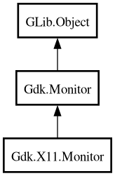

Monitor
Object Hierarchy:

Description:
[
CCode ( type_id =
"gdk_x11_monitor_get_type ()" ) ]
[
GIR ( name =
"X11Monitor" ) ]
public class Monitor :
Monitor
Content:
Static methods:
Creation methods:
Inherited Members:
All known members inherited from class Gdk.Monitor
All known members inherited from class GLib.Object